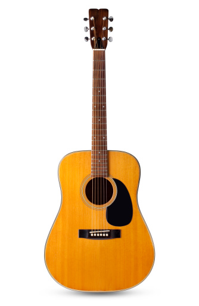
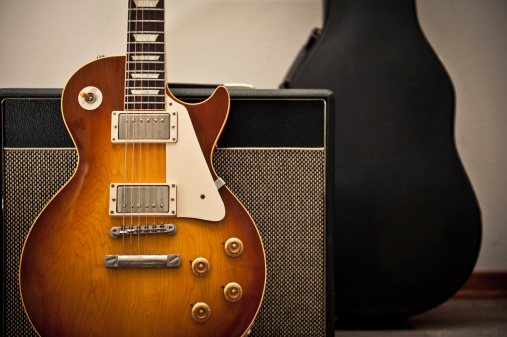

Are you looking for the perfect guitar?
We've got a broad selection of new and used guitars that are both acoustic and electric for you to browse. Maybe you need an acoustic guitar that will help take your finger picking style of playing to the next level or maybe you need an electric guitar to practice your arpeggios. Whatever you're looking for, we've got the perfect match for you and your playing style. Check out our guitars below:
Acoustic Collection
Electric Collection
Guitar Lesson Rates
Guitars & Lessons: Take your playing to the next level.
At Guitar Haven we provide lessons to players of all skill levels. Whether you've just picked up your first guitar, or you are an advanced player ready to take your playing up to 11, we've got a rocking line up of professional guitar teachers ready to help you wherever you are in your journey to guitar god. Here you can find the teacher you need based on your level of guitar expertise and their rates:
Beginner: Roger - MWF @ 6pm. Intermediate: Phil - T TH @ 7pm. Expert: Jackson - Sat @ 8am.